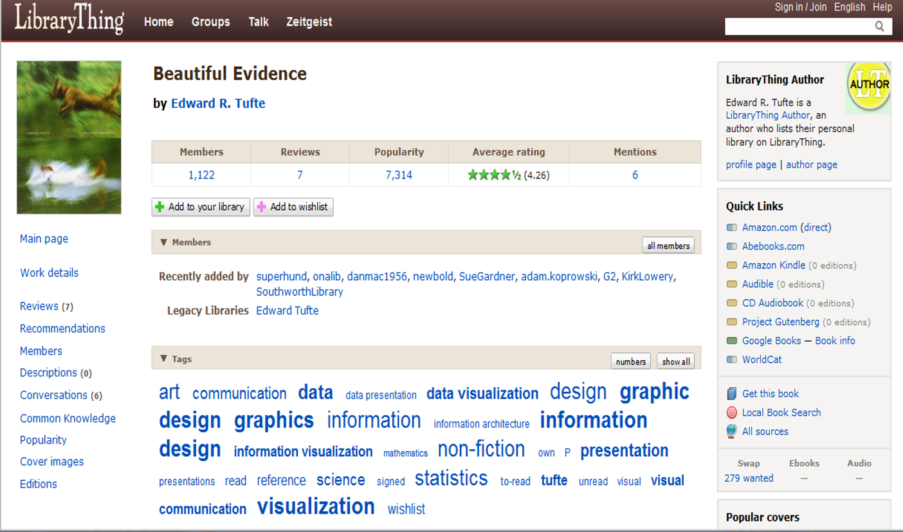

Choose appropriate controlled or other vocabulary to use (natural language, free text)
Choose appropriate level of indexing
exhaustivity
specificity
number of subject terms to include
IR System Design
“Why are online catalogs still hard to use?” (Borgman 1996)
System design models
query design
online card catalog model
representations have to fit into “cookie cutter” systems that were developed many years ago and do not necessarily benefit from what we now know about users and their information seeking processes
what are Second Generation catalogs incorporating? How are they more user-centered? Social?

Socially-Constructed Organizing Structures
